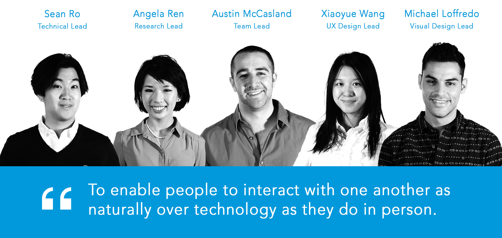
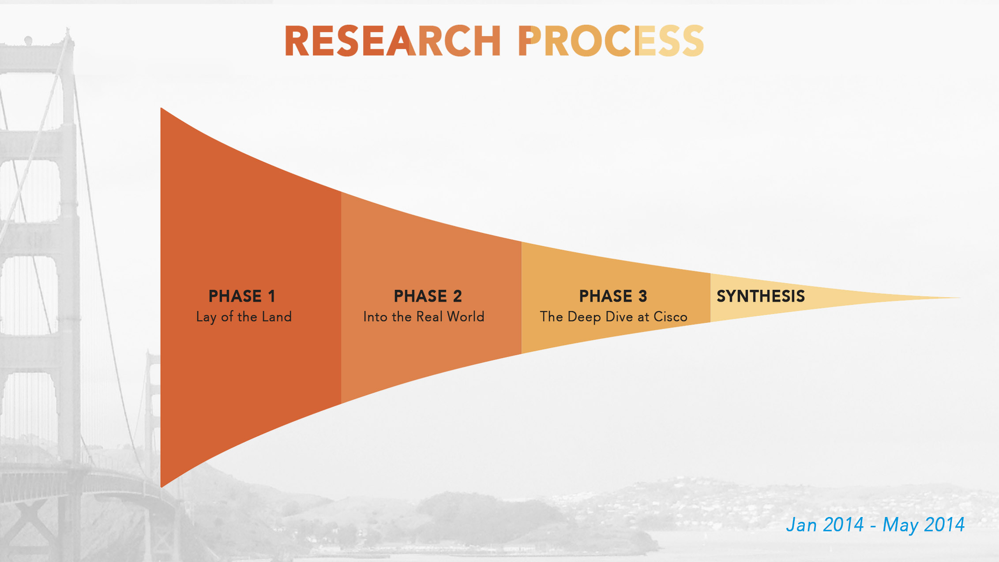
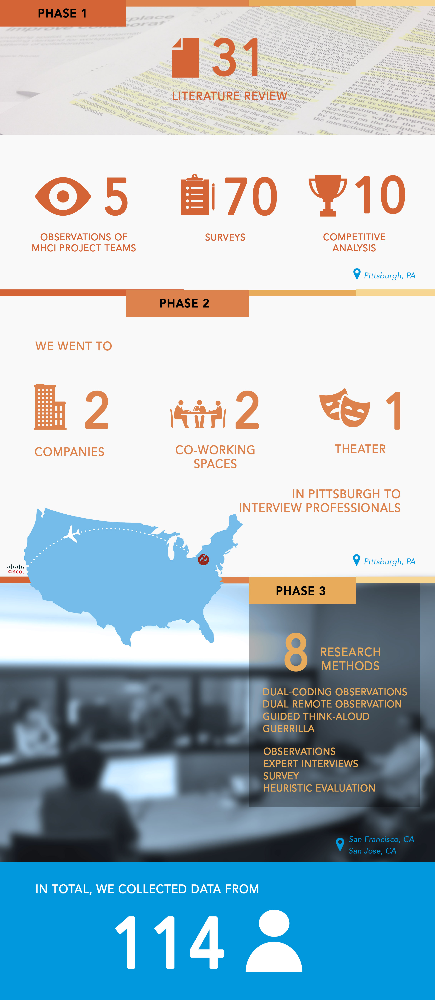
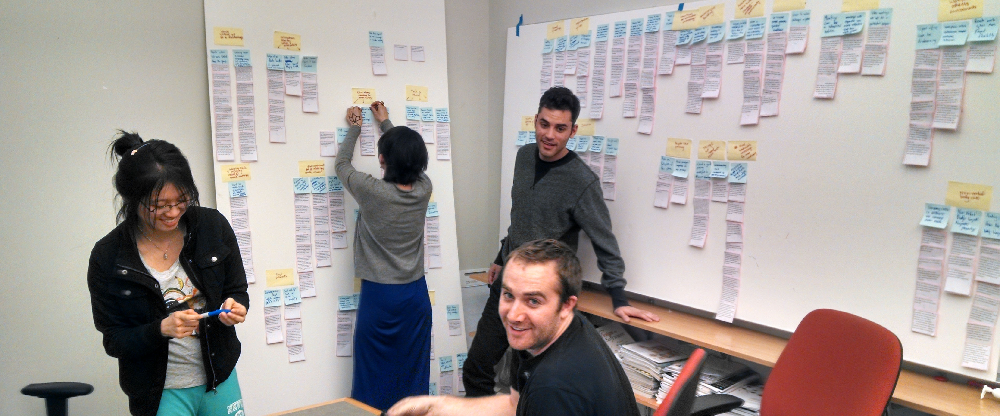
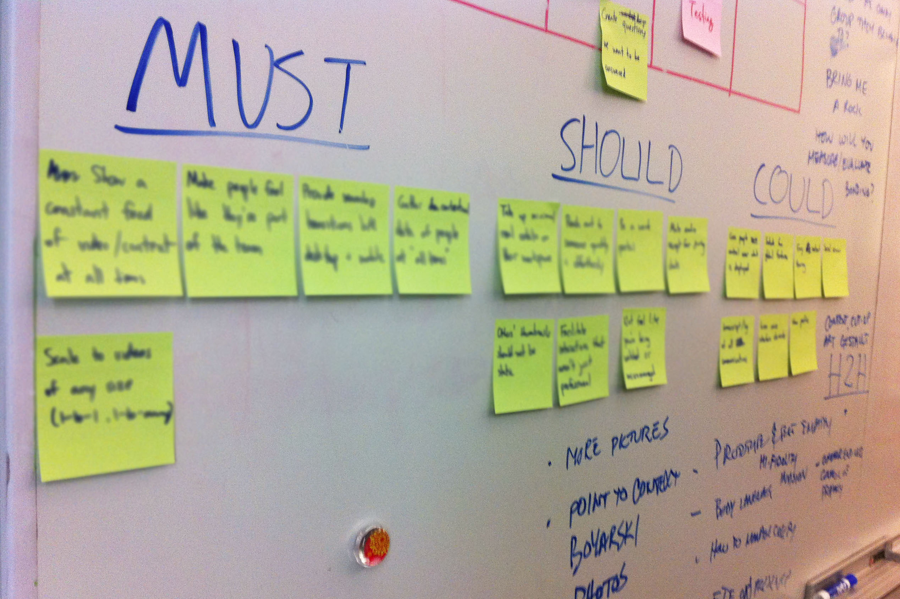
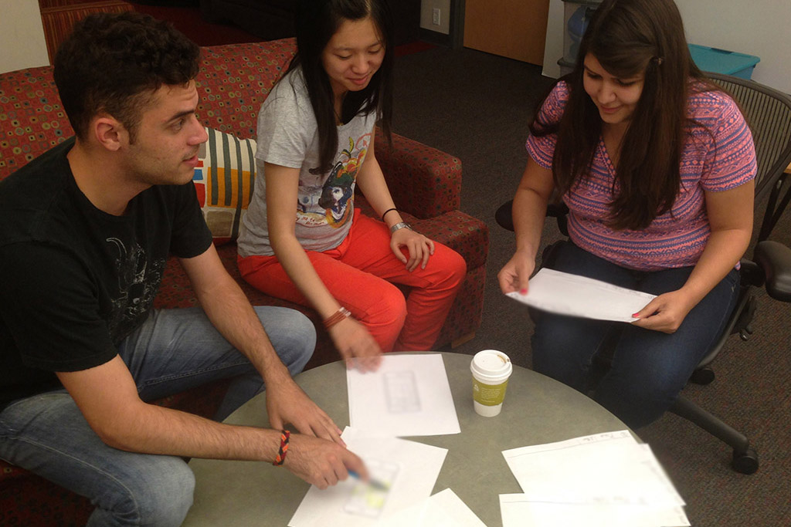
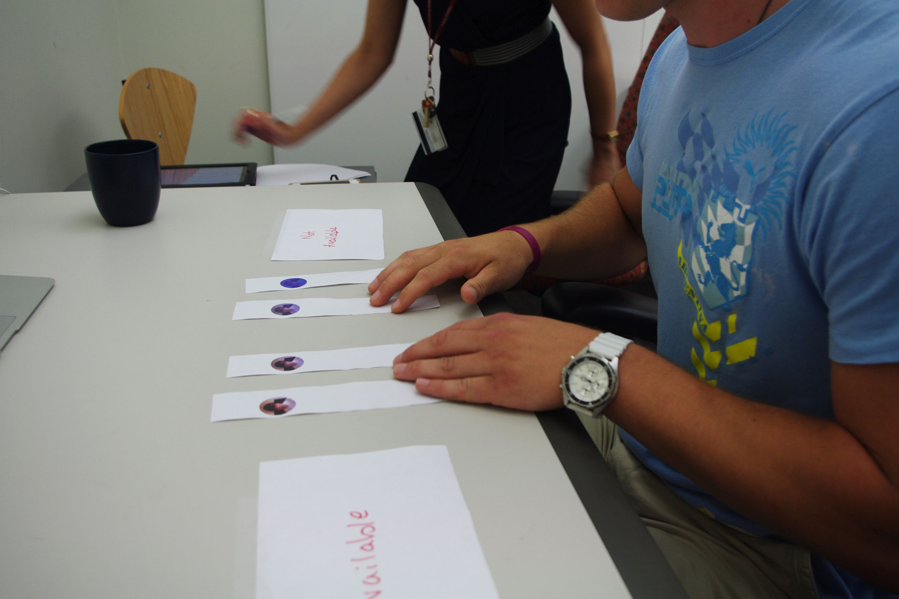
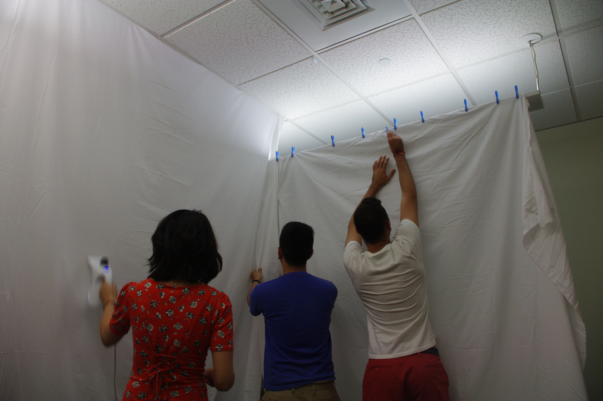
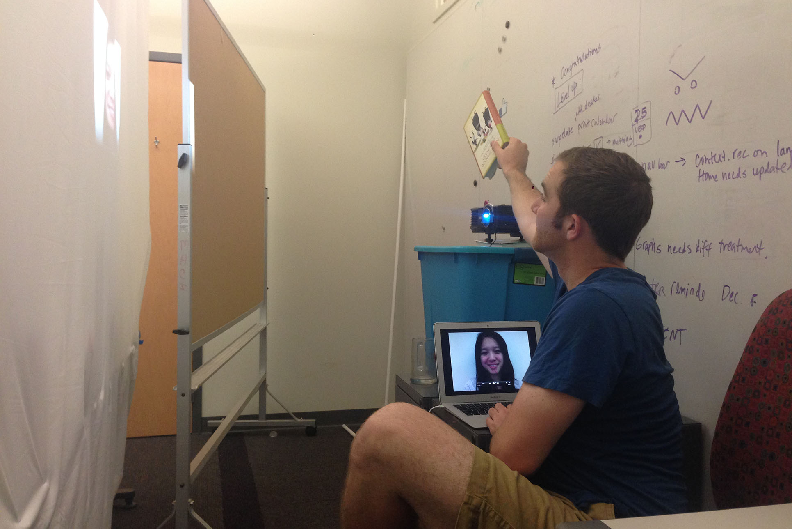
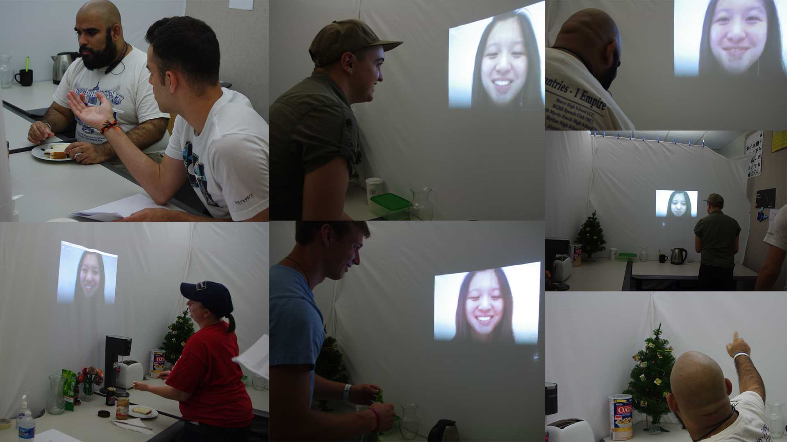

May 4 - 7, 2015
Competitive Analysis
Stakeholders Interviews
Focus Group
Prototyping
Iterative Design
Design
Shervin Shaikh (Research Engineer)
People work remote nowadays. It's cheaper to hire in a variety of locations, and employers have access to a wider talent pool.
Over 13.4 million work remote in America alone, and the number is increasing. Over next 9 years, 41% of workforce will be working remote.
Forbes: 10 Ways Millennials Are Creating The Future Of Work
Friction.
Communication is not efficient. Setting up GoToMeetings and WebEx takes too long.
Non-verbal cues are missing. When a meeting is over, conversation is cut off.
1. Brainstorming

We are an interdisciplinary team working in an agile environment, and we love daily scrum.
I not only involved myself in hardcore research, but also created all the graphics and storyboards.
I made the following infographics to summarize our research.


We mainly used flow model, sequence model, and affinity diagrams to synthesize our data.

According to our three key findings, I not only contributed a lot of ideas for visioning, but also clarified vision direction and paved the way for final design decision.

We speed dated our ideas with users, and now we are in iterative design phase. Starting from paper prototype, we moved on to mid-fifelity prototype on screen and finally experience similation.
 
Here's a sample iteration timeline from our book report, and for every feature, we went through 5 to 6 iterations. There are a total of 3 featurs, and this is the first feature - Persistent Video.
Setting up
 
User test

Paper Prototyping
Balsamiq
Photoshop
InDesign
Sketch 3
Photography and Video Editing